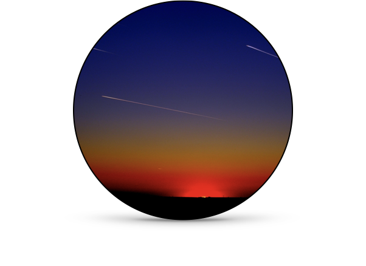

Cosmic Choreography: Gravity's Dance Through Space and Time
Journey through the revolutionary understanding of planetary motion, from Kepler's meticulous observations to Newton's universal law of gravitation. This tutorial explores the mathematics that describes how planets orbit the Sun in elliptical paths and how satellites maintain their trajectories around Earth.
Key concepts include:
- Uniform circular motion and centripetal force
- Newton's law of universal gravitation: $F_g = G\frac{m_1 m_2}{r^2}$
- Kepler's three laws of planetary motion
- The physics of satellites and "weightlessness"
Waves of Light: The Electromagnetic Spectrum
Explore the fascinating nature of electromagnetic waves, from radio waves spanning kilometers to gamma rays smaller than an atom. This tutorial connects Maxwell's equations to the practical applications of different wavelengths in our modern world.
The tutorial covers:
- The historical development of electromagnetic theory
- Wave equations and properties: $c = \lambda f$
- The complete electromagnetic spectrum
- How Hertz, Marconi, and others transformed theoretical physics into revolutionary technology
Einstein's Time: The Special Theory of Relativity
Delve into Einstein's 1905 revolution that forever changed our understanding of space, time, and energy. This tutorial makes the seemingly counterintuitive concepts of relativity accessible through clear mathematics and historical context.
Students will explore:
- The Michelson-Morley experiment and the constant speed of light
- Time dilation and the relativity of simultaneity
- Length contraction: $L = L_0\sqrt{1-\frac{v^2}{c^2}}$
- Mass-energy equivalence: $E = mc^2$ and its implications